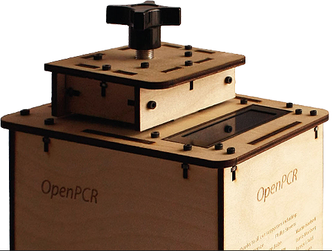
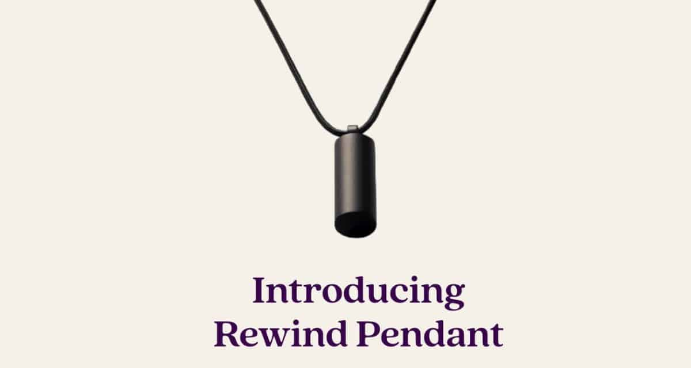
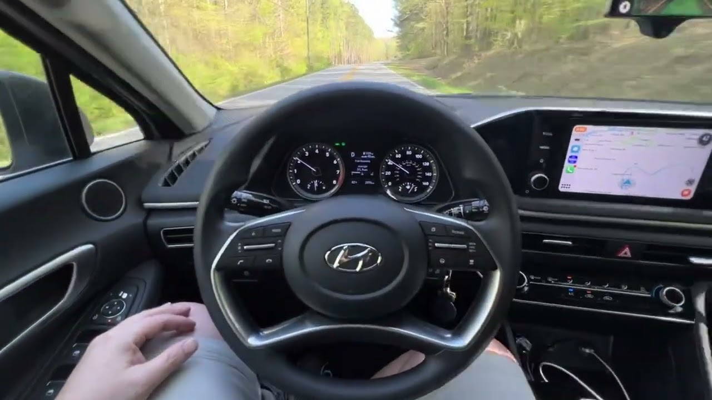
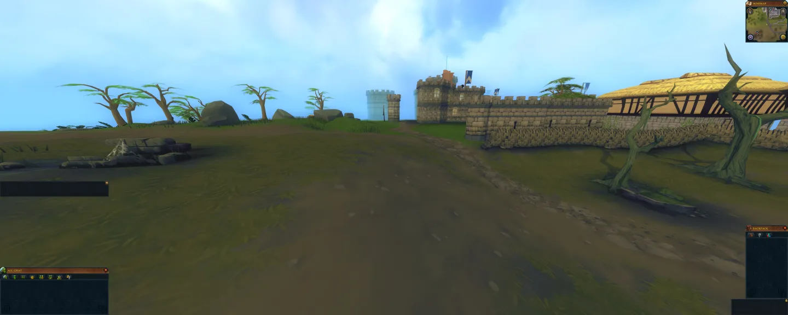
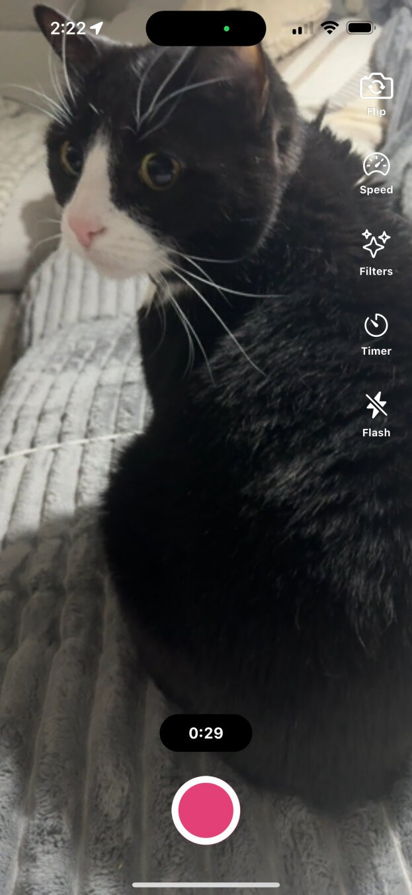

Tech Uncharted: Exploring the Edges of Innovation and Open Source

Dylan
April 16, 2024
Tech Detours: Off the Beaten Path with Your Sarcastic Guide
Alright, folks—brace yourselves. This isn’t your run-of-the-mill, snooze-fest tech news. No, we're diving headfirst into the quirky underbelly of the tech world, from AI gizmos like Humane's AI Pin to
open-source escapades with Comma 3, Lost City - 910, and Loops. And why, you ask? Because while mainstream tech gets its fair share of the limelight, the real treasures are often hidden in the shadows, waiting for a sarcastic tech dad to shed some light on them. As a father of three, I’m no stranger to digging deep (into both diaper bags and code), so join me as we uncover the projects that are as unconventional as my parenting style. Let's explore the giants of AI and the underdogs of
FOSS, proving once and for all that tech news can actually be as entertaining as it is enlightening.
OpenPCR: The Mold Detective

Think of OpenPCR as the Sherlock Holmes of the mold world, but without the deerstalker cap. This nifty device doesn't just sniff out the mold lurking in your home or office; it amplifies its DNA to tell you exactly who's crashing at your pad. It's perfect for those who prefer a dash of humor with their science. Not up for reading tech manuals? No worries! You can dive into The OpenPCR Repository where all the magic happens, and start your detective work on those uninvited fungal guests.
Humane's AI Pin: Brilliant or Big Brother?
So, Humane's rolling out this slick new AI Pin that promises to keep you connected without turning into an eavesdropper—yeah, because we've never heard that one before, right? Picture this: you're out on an adventure, head held high, not a care in the world, with your metaphorical tech toolbox right there with you. Sounds pretty brilliant, doesn't it? But let's not forget our tech history lessons here.
Remember when similar devices promised discretion only to end up with privacy concerns louder than my kids on a sugar rush? Humane insists that their AI Pin is different, designed to keep your data yours and yours alone. They're packing it with features that are genuinely forward-thinking—phone calls, messages, AI composition, and even real-time translation, all accessible right from your shirt.
But here’s the million-dollar question: can we trust a device to be both incredibly helpful and completely harmless? While I love the idea of strolling through life, tech-enhanced and unbothered, there's that nagging voice in the back of my head (and no, it's not the AI) asking if we're just inviting Big Brother to a closer seat at the table.
For more details on what's currently available and what's brewing in their tech lab, you can check their official changelog.
Rewind Pendant: The Cost-Effective Challenger

Ever wanted to feel like a budget James Bond without dropping the big bucks? Meet the Rewind Pendant, your wallet-friendly sidekick in the high-tech world of personal AIs. For $600 less than its rivals, this clever little device doesn't just save your money—it saves your conversations too, encrypting them faster than you can say "license to chat." And it's polite, too; it asks permission before recording, because even a budget Bond respects privacy. If your tech gadgets usually make your bank account weep, the Rewind Pendant might just be the quirky, cost-effective hero you've been waiting for.
Comma 3: Not Your Average Backseat Driver
 Imagine you’re driving your trusty gas-powered car because you're not about to jump on the electric vehicle bandwagon. Only, you’re not actually driving. You’ve been demoted to the official backseat driver as the new Comma 3 takes the wheel. This isn’t just any gadget; it’s like having an Uber driver without the small talk. Comma 3 uses OpenPilot, a slick piece of software that turns your vehicle into a self-driving car.
Sure, some of you might be skeptical about letting a camera take control of your car, but this isn’t just a sales pitch—it’s an invitation to watch the project evolve. And hey, maybe it’s time to worry about supporting an ethical product instead of drooling over Elon Tusk’s 🐘 overhyped Teslas. Follow along with Comma 3’s journey and decide for yourself if it’s the future of driving or just another tech fad.
Lost City - 910: A Nostalgic Rebirth in Runescape's Universe
 Hold onto your rune scimitars, because Lost City - 910 isn't just another private server—it's a revival of the golden era of Runescape 3, and it's free and open-source! Managed by the visionary Pazaz and supported by a dedicated team, this project breathes new life into the last Java client, making it a unique preservation of RS3 history.
Imagine stepping back into a world where every corner of Gielinor is as you fondly remember it, but with the enhancements and stability of modern programming. Written in RuneScript, Lost City - 910 aims not just to mimic but to perfect the experience with meticulously recreated game mechanics and environments.
Why settle for nostalgia when you can live it? This server offers a chance to reconnect with the game as it was, yet underpinned by a community-driven development process that ensures it keeps evolving. Whether you’re a veteran longing for the good old days or a newcomer curious about RS3’s roots, Lost City - 910 promises an authentic adventure into the past with the perks of today's tech.
Dive into this passionate project and join a community where every quest and update is a labor of love. Follow their progress and contribute if you feel the call of the old world!
Loops: Rewinding the Future of Social Media Shorts in the Fediverse

Loops, crafted by the founder of Pixelfed, Dan, is an upcoming addition to the fediverse that allows users to explore and share short videos akin to TikTok, Reels, and Shorts. This project aims to integrate seamlessly with other fediverse platforms like Mastodon, leveraging the decentralized structure to offer a new form of media sharing that emphasizes user control and privacy. It's currently in the pipeline, with updates and early access details shared through its Pixelfed account. To stay informed and possibly participate in early testing, you can follow the developments on their official Loops page and Pixelfed account.
Your idea of hosting your own instance aligns well with the fediverse philosophy of decentralization and creating personalized spaces. This approach not only allows you to control the narrative and community engagement but also helps in carving out a niche away from mainstream platforms, potentially making it your digital "Myspace."
Feel free to follow me on Myspace
Logging Off: That's All for This Tech Rodeo!
Whether you found these insights useful or not, I hope they've at least enlightened you about some of the intriguing projects currently shaping our digital landscape. This is just the beginning of our tech trek—I plan to keep exploring and sharing more hidden and popular tech gems. Each article is a step in my own journey to learn more about the innovative and quirky tech world. So, stay tuned for more deep dives into projects that are as exciting as they are impactful.